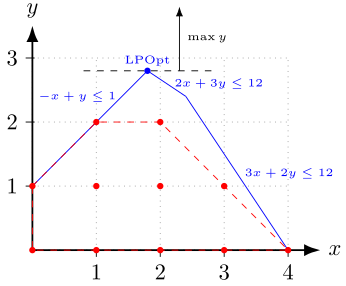
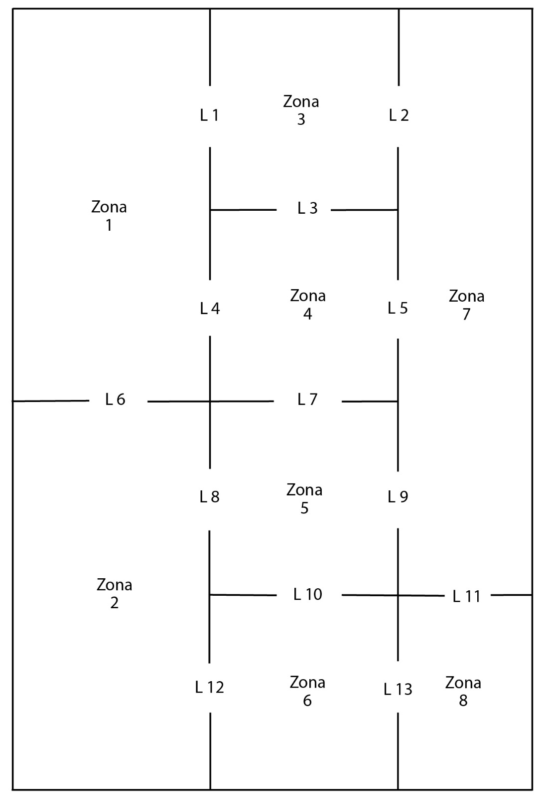

Optimizacija u Pajtonu - 🧪 modul SciPy#
SciPy je laboratorija za naučno računanje u Pajtonu. To je biblioteka napravljena kao „viši nivo” iznad NumPy-a — kao alat koji nam omogućava da rešavamo ozbiljne matematičke i inženjerske probleme bez potrebe da sami implementiramo komplikovane algoritme. Ako NumPy omogućava brzo računanje nad nizovima i matricama, onda SciPy donosi već gotove funkcije za statistiku, optimizaciju, interpolaciju, integrale, diferencijalne jednačine i još mnogo toga.
Ishodi poglavlja: Nakon proučavanja ovog poglavlja student će biti u stanju da:
formuliše LP i MILP modele sa kontinuiranim i celobrojnim promenljivama odlučivanja,
implementira model i izračunava optimalno rešenje koristeći
scipy.optimize.linprog,interpretira optimalno rešenje i ekonomsko značenje ograničenja i dualnih veličina u kontekstu alokacije resursa i maksimizacije profita.
Uvod#
SciPy je organizovan u podpakete koji pokrivaju različite domene računarstva. U sledećoj tabeli su neki od tih podpaketa:
Podpaket |
Opis |
|---|---|
cluster |
Algoritmi za klasifikaciju |
integrate |
Integracija i diferencijalne jednačine |
interpolate |
Interpolacija i glatki splajnovi |
linalg |
Linearne algebra |
optimize |
Optimizacija i rešavanje jednačina |
stats |
Statističke raspodele i funkcije |
Naš fokus će biti na modulu linprog za linearno programiranje u podpaketu optimize.
Instalacija/ažuriranje modula za optimizaciju SciPy#
# !pip install ... → radi u notebooku
!pip install --upgrade scipy
# pip install --upgrade --proxy http://proxy.ekof.bg.ac.rs:8080 scipy # na racunarima koji imaju internet preko proxy servera ekof
Ako je modul instaliran treba ga uvesti u radnu memoriju pre započinjanja rada u beležnici zajedno sa modulom NumPy
import scipy as sp
import numpy as np
Da bi modul izvršavao programe korektno treba da imate instalirane na vašem sistemu najnovije verzije modula SciPy i Numpy. Informaciju o najnovijim verzijama modula možete dobiti ako u bilo kom pretraživaču otkucate u polju za pretragu, na primer, latest version numpy, odnosno latest version scipy. Verzija modula na vašem sistemu se proverava sa:
!pip index versions scipy
Linearno programiranje u Pithon-u#
Rešavamo sledeći problem: $\(\begin{aligned} \min_x\, &\,c^T x \\ \text{uz uslove:}\quad &\, A_{ub} x \leq b_{ub},\\ &\, A_{eq} x = b_{eq},\\ &\, l \leq x \leq u,\end{aligned}\)$
gde je \(x\) vektor promenljivih; \(c\), \(b_{ub}\), \(b_{eq}\), \(l\), i \(u\) vektori, a \(A_{ub}\) i \(A_{eq}\) matrice.
Kako bi rešili prethodni optimizacioni zadatak u Pajtonu neophodan nam je modul SciPy, odnosno njegov metod scipy.optimize.linprog. Sledi njegova sintaksa, a sve detalje možemo videti sa linprog?.
linprog(c, A_ub=None, b_ub=None, A_eq=None, b_eq=None, bounds=None, method='highs', callback=None, options=None, x0=None, integrality=None)
Metod isporučuje objekat u obliku rečnika. U tabeli koja sledi su izlazni parametri i njihove značenje:
Parametar |
Značenje |
|---|---|
|
Tekstualna poruka o statusu optimizacije |
|
Boolean – da li je optimalno rešenje pronađeno |
|
Numerički kod statusa (0 = OK, 2 = infeasible, 3 = unbounded…) |
|
Vrednost ciljne funkcije u optimumu |
|
Optimalne vrednosti promenljivih |
|
Broj iteracija optimizacije |
|
Udaljenost rešenja od granica promenljivih ( |
|
Marginalne vrednosti (cene u senci, dualne vrednosti) za granice promenljivih ( |
|
Vrednost dodatne (slack) promenljive za ograničenja tipa nejednakosti |
|
Cene u senci (dualne promenljive, marginalne vrednosti) za ograničenja tipa nejednakosti |
|
Dodatne (slack) promenljive za ograničenja tipa jednakosti |
|
Dualne promenljive za ograničenja tipa jednakosti |
|
Broj čvorova za MIP (celobrojno programiranje) |
|
Razlika između najboljeg celobrojnog i relax rešenja |
|
Dualna granica za MIP |
from scipy.optimize import linprog
linprog?
Primer 1.#
Rešimo sledeći optimizacioni problem:
Parametri modela koji se prosleđuju metodu
linprog
c = [-1, 4] # Funkcija cilja
A = [[-3, 1], [1, 2]] # Matrica linearnih ograničenja. Sva moraju biti oblika <= za matricu A_ub
b = [6, 4] # desna strana lineranih ograničenja
x_bounds = (None, None) # granice za prvu promenljivu. Podrazumevana vrednost je da su promenljive nenegativne.
y_bounds = (-3, None)
Rešenje problema
linprog(c, A_ub=A, b_ub=b, bounds=[x_bounds, y_bounds])
# Objekat sa atributima koji reprezentuju rešenje optimizacionog problema
message: Optimization terminated successfully. (HiGHS Status 7: Optimal)
success: True
status: 0
fun: -22.0
x: [ 1.000e+01 -3.000e+00]
nit: 0
lower: residual: [ inf 0.000e+00]
marginals: [ 0.000e+00 6.000e+00]
upper: residual: [ inf inf]
marginals: [ 0.000e+00 0.000e+00]
eqlin: residual: []
marginals: []
ineqlin: residual: [ 3.900e+01 0.000e+00]
marginals: [-0.000e+00 -1.000e+00]
mip_node_count: 0
mip_dual_bound: 0.0
mip_gap: 0.0
Interpretacija rezultata (Zaključak)
Optimalna vrednost funkcije je \(z_{min}=-22\). Postiže se za vrednosti \((x,y)=(10,-3)\).
Komentari:
Marginalna promena resursa u drugoj nejednačini za 1 dovodi do marginalne promene u funkciji cilja za 1 (Dualne promenljive,
ineqlin: marginals)Resursi koje su opisani drugom nejednačinom su maksimalno iskorišteni, a resursi opisani prvom nejednačinom imaju dodatne kapacitete u vrednosti od 39 (Dodatne promenljive,
slack).
Primer 2. Silver (EMM)#
Preduzeće „Silver“ koje proizvodi dva proizvoda, A i B, treba da odredi optimalan godišnji plan proizvodnje. Ugovorene obaveze su takve da se godišnje mora proizvesti i isporučiti najviše 3.000 proizvoda A i najmanje 1.000 proizvoda B. Za proizvodnju jednog proizvoda A treba utrošiti 6 časova rada, a za proizvod B 5 radnih časova. Godišnji kapacitet proizvodnje je 30.000 radnih časova. Takođe, tehnološki uslovi ne dozvoljavaju obim proizvodnje manji od 2.000 jedinica oba proizvoda. Profit po jedinici proizvoda A je 50 a proizvoda B 200 novčanih jedinica.
Postavka modela
\(x_1\)- količina proizvoda A, \(x_2\)- količina proizvoda B $\(\begin{aligned} \max{50x_1+200x_2}& \\ \text{pri uslovima:}\,\, x_1&\le 3000 \\ x_2&\ge 1000 \\ 6x_1+5x_2 &\le 30000 \\ x_1+x_2 &\ge 2000 \end{aligned}\)$
Parametri modela koji se prosleđuju metodu
linprog
c=[-50,-200]
A=[[6,5],[-1,-1]]
b=[30000,-2000]
x1_bounds=(0,3000)
x2_bounds=(1000, None)
Rešenje problema
linprog(c, A_ub=A, b_ub=b, bounds=[x1_bounds, x2_bounds])
message: Optimization terminated successfully. (HiGHS Status 7: Optimal)
success: True
status: 0
fun: -1200000.0
x: [ 0.000e+00 6.000e+03]
nit: 0
lower: residual: [ 0.000e+00 5.000e+03]
marginals: [ 1.900e+02 0.000e+00]
upper: residual: [ 3.000e+03 inf]
marginals: [ 0.000e+00 0.000e+00]
eqlin: residual: []
marginals: []
ineqlin: residual: [ 0.000e+00 4.000e+03]
marginals: [-4.000e+01 -0.000e+00]
mip_node_count: 0
mip_dual_bound: 0.0
mip_gap: 0.0
Zaključak. Optimalan profit 1,200,000. Postiže se proizvodnjom od 6000 jedinica proizvoda B. Proizvodi se 4000 jedinica iznad tehnološkog minimuma(ineqllin.residual). Povećanjem radnih sati za 1 jedinicu, profit bi se uvećao za 40 jedinica (ineqlin.marginals)
Primer 3. Selekcija portfolija#
Razmotrimo slučaj kompanije NovaCap, koja je prodajom dela vlasničkog udela obezbedila 150,000 $ gotovine i želi da je uloži u nove investicione mogućnosti. Interni analitičari preporučuju ulaganja u tri oblasti: obnovljivi izvori energije, građevinski materijali i državne obveznice.
Identifikovano je 5 konkretnih opcija ulaganja, zajedno sa projektovanim godišnjim stopama prinosa (u %), datim u tabeli:
Investicija |
Projektovana stopa |
|---|---|
SolarEdge Renewables |
9.6 |
WindRiver Energy |
8.4 |
StoneBuild Materials |
7.1 |
TitanCement Group |
6.7 |
Government bonds |
4.2 |
Menadžment NovaCap-a postavio je sledeća pravila:
Ne ulagati više od 70,000 $ u jednu industrijsku granu (obnovljivi izvori ili građevinski materijali).
Iznos uložen u državne obveznice mora biti najmanje 30% od ukupnog iznosa uloženog u sektor građevinskih materijala.
Investicija SolarEdge Renewables se smatra rizičnijom i ne sme preći 55% ukupnih ulaganja u sektor obnovljivih izvora energije.
Preporučiti portfelj, tj. odrediti koje investicije odabrati i koliki iznos uložiti u svaku od njih, ako kompanija može da investira ukupno 150,000 $.
Rešenje:
matematički model
Neka je \(x_i\) - količina novca uložena u investiciju \(i \in \{1,2,3,4,5\}\) redom iz tabele. $\(\begin{aligned} \max{0.096x_1 + 0.084x_2 + 0.071x_3 + 0.067x_4 + 0.042x_5}& \\ \text{pri uslovima:}\,\, x_1 + x_2 + x_3 + x_4 + x_5 &\le 150000 \\ x_1 + x_2 &\le 70000 \\ x_3 + x_4 &\le 70000 \\ x_5 &\ge 0.3(x_4 + x_5) \\ x_2 &\le 0.55(x_1+x_2)\\ \end{aligned}\)$
Parametri modela koji se prosleđuju metodu
linprog
c = -np.array([0.096, 0.084, 0.071, 0.067, 0.042])
# metod optimizuje samo problem minimuma, zato negativni znak u funkciji cilja
A=np.array([[1, 1, 1, 1, 1], [1, 1, 0, 0, 0], [0, 0, 1, 1, 0], [0, 0, 0.3, 0.3, -1], [-0.55, 0.45, 0, 0, 0]])
b=np.array([100000, 50000, 50000,0,0])
Rešenje problema
linprog(c, A, b) # Nije potrebno imenovati parametre ako se unose redom
# Podrazumeva se da su promenljive nenegativne
message: Optimization terminated successfully. (HiGHS Status 7: Optimal)
success: True
status: 0
fun: -8015.384615384615
x: [ 5.000e+04 0.000e+00 3.846e+04 0.000e+00 1.154e+04]
nit: 2
lower: residual: [ 5.000e+04 0.000e+00 3.846e+04 0.000e+00
1.154e+04]
marginals: [ 0.000e+00 1.200e-02 0.000e+00 4.000e-03
0.000e+00]
upper: residual: [ inf inf inf inf
inf]
marginals: [ 0.000e+00 0.000e+00 0.000e+00 0.000e+00
0.000e+00]
eqlin: residual: []
marginals: []
ineqlin: residual: [ 0.000e+00 0.000e+00 1.154e+04 0.000e+00
2.750e+04]
marginals: [-6.431e-02 -3.169e-02 -0.000e+00 -2.231e-02
-0.000e+00]
mip_node_count: 0
mip_dual_bound: 0.0
mip_gap: 0.0
Interpretacija rezultata.
Rezultati: Optimalna vrednost portfolija je 8015.38. Treba uložiti 50000, 38460, 0, 40000, 11540 redom u investicije iz tabele. Svi resursi osim ulaganja u građevinsku industriju su maksimalno iskorišćeni.
Mešoviti problem linearnog programiranja#
Mešovito linearno programiranje (MILP) je proširenje standardnog linearnog programiranja u kojem neke promenljive mogu da budu realne vrednosti, a druge imaju celobrojne vrednosti (npr. 0, 1, 2…). Takva situacija se javlja u mnogim realnim problemima gde se donose diskretne odluke: da li nešto uključiti ili isključiti, kupiti ili ne kupiti, izabrati ili odbaciti.
Primeri realnih odluka koje zahtevaju celobrojne promenljive:
broj zaposlenih (ne može biti 3.7 osobe),
broj mašina ili kamiona,
da li proizvodimo neki proizvod (1) ili ne (0),
binarne odluke — ulagati ili ne,
broj otvaranih objekata, skladišta, fabrika itd.
MILP omogućava kombinovanje neprekidnih promenljivih (npr. količina proizvoda), celobrojnih promenljivih (npr. broj jedinica) i binarnih promenljivih (0 ili 1 — tipično za odluke).
Zašto nam MILP treba?
Standardni LP modeli su glatki, brzi i lepi za matematičku analizu, ali ne mogu da modeliraju odluke koje su diskretne. MILP rešava taj problem — uvodi „rigidnost“ odlučivanja.
MILP je moćniji, ali i znatno teži za računanje od LP-a, jer uključuje kombinatornu eksploziju mogućih rešenja. Zbog toga moraju da se koriste napredni algoritmi.
Primer 1.#
Sledi standardni primer problema ovog tipa sa Wikipedije.
Zadatak ćemo rešiti metodom linprog specifikacijom parametra integrality. Naime, integrality je lista dužine jednake broju promenljivih u problemu, čije vrednosti ukazuju na tip svake promenljive. Podrazumevana vrednost te liste su sve nule, odnosno da su sve promanljive realne. Ako se nekom elementu te liste dodeli 1, to znači da je ta promenljive celobrojna. Postoji i druge mogućnosti, koje se mogu videti preko linprog?.
Na slici koja sledi je grafička interpretacija problema. Očigledno, problem ima optimalno rešenje 2 koje se postiže u tačkama (1,2) i (2,2).
{kind=link}

Fig. 17 Grafička interpretacija problema (Izvor: Wikipedia)#
from scipy.optimize import linprog
import numpy as np # nije nam neophodan, ali je komotnije sa njim
Parametri modela koji se prosleđuju metodu
linprog
c = -np.array([0, 1]) # vektor koji definiše funkciju cilja. Znak minus je ispred c, jer je podrazumevana minimizacija.
A = np.array([[-1, 1], [3, 2], [2, 3]]) # matrica ograničenja
b = np.array([1, 12, 12]) # vektor gornjih ograničenja za svaki linearni uslov
celobrojnost = np.array([1,1]) # Sve promenljive su celobrojne
Rešenje problema
res = linprog(c, A, b, integrality=celobrojnost) # objekat, referiše na rešenje optimizacionog problema
res.fun, res.x # preuzimamo samo rešenja jer dualnost kod mlp ne važi
(-2.0, array([2., 2.]))
Zaključak. Optimalno rešenje je \(\max y = -(-2)=2\) i postiže se za vrednosti promenljivih \((x,y)=(2,2)\)
Primer 2. Budžetiranje#
Ministarstvo razmatra realizaciju više kapitalnih infrastrukturnih projekata (izgradnja saobraćajnica, rekonstrukcija bolnica, digitalizacija javne uprave i energetska efikasnost), čija se dinamika ulaganja razlikuje tokom naredne četiri budžetske godine. Svaki projekat zahteva određena finansijska sredstva u svakoj godini implementacije, pri čemu se iznosi ulaganja razlikuju po godinama i projektima.
S obzirom na to da su budžetska sredstva ograničena u svakoj pojedinačnoj godini, Ministarstvo mora da odabere takvu kombinaciju projekata koja donosi najveću ukupnu društveno-ekonomsku korist, merenu neto sadašnjom vrednošću (NPV), uz poštovanje godišnjih budžetskih ograničenja.
Procene neto sadašnje vrednosti pojedinačnih projekata, njihovi godišnji zahtevi za budžetskim sredstvima, kao i raspoloživi budžet u svakoj od četiri godine, prikazani su u narednoj tabeli.
Projekat |
NPV |
Godina 1 |
Godina 2 |
Godina 3 |
Godina 4 |
|---|---|---|---|---|---|
A (Autoput) |
120 |
40 |
30 |
20 |
10 |
B (Bolnica) |
90 |
20 |
25 |
15 |
10 |
C (Digitalizacija) |
70 |
15 |
20 |
20 |
5 |
D (Energetska efikasnost) |
60 |
10 |
15 |
10 |
10 |
Raspoloživi budžet |
70 |
70 |
55 |
30 |
Kod budžetiranja kapitala, cilj kompanije je maksimiziranje ukupne neto sadašnje vrednosti svih projekata.
Rešenje:
matematički model
Neka je \(x_i \in \{0,1\}\) - indikator da li je izabran projekat \(i \in \{1,2,3,4\}\) redom iz tabele. $\(\begin{aligned} \max{120x_1+90x_2+70x_3+60x_4}& \\ \text{pri uslovima:}\,\, 40x_1+20x_2+15x_3+10x_4&\le 70 \\ 30x_1+25x_2+20x_3+15x_4&\le 70 \\ 20x_1+15x_2+20x_3+10x_4&\le 55 \\ 10x_1+10x_2+ 5x_3+10x_4&\le 30\\ x_1,x_2,x_3,x_4&\in\{0,1\} \end{aligned}\)$
Parametri modela koji se prosleđuju metodu
linprog
c = -np.array([120,90,70,60])
A = np.array([[40,20,15,10],
[30,25,20,15],
[20,15,20,10],
[10,10,5,10]])
b = np.array([70,70,55,30])
ogranicenja_promenljivih = [(0,1) for i in range(len(c))] # ili [(0,1), (0,1),(0,1), (0,1) ]
celobrojnost=np.ones_like(c)
Rešenje:
res = linprog(c, A, b, integrality=celobrojnost, bounds=ogranicenja_promenljivih)
res.fun, res.x
(-270.0, array([1., 1., 0., 1.]))
Interpretacija rezultata:
Treba budžetirati: Autoput, bolnice i energetsku efikasnost. Neto efekat 237,000.
Primer 3. Fiksni troškovi#
Državna agencija planira realizaciju javnih radova u narednom planskom periodu. Postoje tri moguće vrste radova:
Sanacija kolovoza (rad 1)
Rekonstrukcija vodovodne mreže (rad 2)
Održavanje javnih objekata (rad 3)
Za svaku jedinicu realizovanog obima rada agencija ostvaruje neto korist (u n.j.), ali za pokretanje svake vrste radova postoji i fiksni trošak (npr. priprema tenderske dokumentacije, nadzor, uvod u posao). Svaka vrsta radova ima i maksimalni obim koji se može realizovati u periodu.
Agencija raspolaže ograničenim resursima:
R1: građevinski materijal
R2: stručna radna snaga
R3: građevinska mehanizacija
Podaci o neto koristi, utrošku resursa po jedinici, fiksnim troškovima i maksimalnom obimu dati su u tabeli:
Vrsta radova |
Neto korist po jedinici |
R1 po jedinici |
R2 po jedinici |
R3 po jedinici |
Fiksni trošak |
Maksimalni obim |
|---|---|---|---|---|---|---|
Sanacija kolovoza |
60 |
4 |
0 |
5 |
220 |
7 |
Rekonstrukcija vodovoda |
65 |
3 |
3 |
2 |
40 |
6 |
Održavanje javnih objekata |
80 |
6 |
2 |
3 |
300 |
5 |
Raspoložive količine resursa u planskom periodu su:
Resurs |
Raspoloživo |
|---|---|
R1 građevinski materijal |
40 |
R2 stručna radna snaga |
12 |
R3 građevinska mehanizacija |
45 |
Obimi radova budu celi brojevi (npr. broj deonica, broj objekata, broj zahvata).
Formulisati mešoviti celobrojni linearni model (MILP) za izbor obima radova koji maksimizira ukupnu neto korist umanjenu za fiksne troškove.
Rešiti model i odrediti optimalan plan realizacije.
Rešenje:
Matematički model.
Neka su \(x_1\), \(x_2\) i \(x_3\) nepoznate količine resursa, \(y_1\), \(y_2\) i \(y_3\) indikatori postojanja fiksnih troškova, tada na osnovu podataka imamo sledeći model:
Parametri modela koji se prosleđuju metodu
linprog
c= -np.array([60, 65, 80, -220, -40, -300]) # Funkcija cilja
A=np.array([[4, 3, 6, 0, 0, 0], # matrica linearnih uslova
[0, 3, 2, 0, 0, 0],
[5, 2, 3, 0, 0, 0],
[1, 0, 0, -7, 0, 0],
[0, 1, 0, 0, -6, 0],
[0, 0, 1, 0, 0, -5]])
b=np.array([40, 12, 40, 0, 0, 0]) # gornja ograničenja linearnih uslova
Promenljive:
ogranicenja_promenljivih= [(0,None), (0,None), (0,None), (0,1), (0,1), (0,1)]
Tip promenljivih:
celobrojnost=np.array([1, 1, 1, 1, 1, 1]) # Sve promenljive su celobrojne
Rešenje problema.
res = linprog(c, A, b, integrality=celobrojnost, bounds=ogranicenja_promenljivih)
res.fun, res.x
(-360.0, array([ 6., 4., -0., 1., 1., -0.]))
Interpretacija rezultata.
Maksimalna korist je 360 mil evra i postiže se ako se sanira kolovoz i izvrši rekonstrukcija vodovoda.
Vežbanja#
✍️ Zadatak 1.#
Kompanija M&D Chemicals prodaje sirove hemikalije \(A\) i \(B\). Ukupna mesečna proizvodnja mora da iznosi barem 350 galona. Ugovor sa jednim dobavljačem obavezuje ih da proizvode 125 galona hemikalije \(A\) na mesečnom nivou. Proizvod \(A\) zahteva 2 sata obrade, a proizvod \(B\) jedan sat. Mesečni kapaciteti su 600 radnih sati. Troškovi proizvodnje hemikalije \(A\) su 2 dolara po galonu, a hemikalije \(B\) $3 dolara po proizvedenom galonu.
Minimiziraj troškove proizvodnje ove kompanije uzimajući u obzir njihove ugovorene obaveze.
Rešenje:#
Optimizacioni model:
Označimo sa \(x_1\) količinu proizvedene hemikalije A, a sa \(x_2\) količinu proizvedene hemikalije B. Tada važi: $\(\begin{aligned} \min{2x_1+3x_2}& \\ \text{pri uslovima:}\,\, x_1&\ge 125 \\ 2x_1+ x_2 &\le 600 \qquad\text{(kapaciteti radnih sati)}\\ x_1+x_2 &\ge 350 \qquad \text{(minimalna proizvodnja)} \\ x_1 &\ge 125 \\ \end{aligned}\)$
c=[2, 3]
A=[[2,1],[-1,-1]]
b=[600,-350]
x1_bounds=(125,None)
x2_bounds=(0,None)
res = linprog(c, A_ub=A, b_ub=b, bounds=[x1_bounds,x1_bounds])
res.fun, res.x, res.ineqlin.marginals, res.ineqlin.residual
(825.0, array([225., 125.]), array([-0., -2.]), array([25., 0.]))
Interpretacija dobijenih inforamcija:
Minimalni troškovi od 825, postižu se proizvodnjom 225 galona hemikalije A i 125 galona hemikalije B.
Povećanjem/smanjenjem ograničenja u vezi minimalne proizvodnje za 1 galon dovodi do povećanja/smanjenja troškova za 2 jedinice. (dualne promenljive - marginals)
Radna snaga nije maksimalno iskorišćena. Imamo 25 neangažovanih sati. Pa bi trebalo razmotriti povećanje proizvodnih kapaciteta. (dopunske promenljive - residual)
✍️ Zadatak 2.#
Adirondack Savings Bank (ASB) ima milion dolara novih sredstava koji moraju biti raspodeljena na stambene kredite, lične zajmove i automobilske kredite. Godišnje stope prinosa za tri vrste kredita su 7% za stambene kredite, 12% za lične kredite i 9% za automobilski krediti. Odbor je odlučio da najmanje 40% od novih sredstava mora biti izdvojeno za stambene kredite. Pored toga, odbor za planiranje ima precizirano da iznos koji se izdvaja za lične kredite ne može biti veći od 60% iznosa koji se izdvaja za automobilske kredite.
Formulisati model linearnog programiranja koji se može koristiti za određivanje količine sredstva ASB treba da dodeli svakoj vrsti kredita kako bi se maksimizirao ukupan godišnji prinos za nova sredstva. Koliko treba izdvojiti za svaku vrstu kredita? Koliki je ukupan godišnji prinos?
Rešenje:#
from scipy.optimize import linprog
import numpy as np
c= -np.array([1.07, 1.12, 1.09]) # x1 Stambeni kredit, x2 Lične krediti, x3 Automobilski krediti
A_ub = [[0, 1, -0.6]] # x2 <= 0.6 x3
b_ub = [0]
A_eq = [[1, 1, 1]] # x1 + x2 + x3 = 1
b_eq = [1]
x1_bounds=(0.4, 1)
x2_bounds=(0, 1)
x3_bounds=(0, 1)
res = linprog(c, A_ub=A_ub, b_ub=b_ub, A_eq=A_eq, b_eq=b_eq, bounds=[x1_bounds, x2_bounds, x3_bounds])
res.x
array([0.4 , 0.225, 0.375])
Za stambene, lične i automobilske kredite izdvajamo redom: 400000, 225000, 375000
✍️ Zadatak 3.#
Bolnica mora da rasporedi medicinske sestre tako da se pacijentima bolnice obezbedi adekvatna nega. Na osnovu evidencije u prethodnim periodima, administratori mogu da projektuju minimumalan broj medicinskih sestara koje treba da budu na radnom mestu u zavisnosti od vremenskog razdoblja i dana u nedelji. Naš zadatak je da pronađemo minimalan ukupni broj medicinskih sestara potrebnih za obezbeđivanje adekvatne nege. Medicinske sestre počinju sa radom na početku bilo koje smene od 4 sata i rade 8 sati ukupno. Formulisati i rešiti problem rasporeda medicinskih sestara kao celobrojni program za jedan dan koristeći podatke ispod.
Smena |
Vreme |
Minimalan broj sestara |
|---|---|---|
1 |
00-04 |
5 |
2 |
04-08 |
12 |
3 |
08-12 |
14 |
4 |
12-16 |
8 |
5 |
18-20 |
13 |
6 |
20-24 |
10 |
Rešenje:#
Optimizacioni model:
Označimo sa \(x_i\) broj sestara u smenama \(i\) i \(i+1\), \(i=1,2,3,4,5\), i sa \(x_6\) broj sestara u smenama \(6\) i \(1\). Tada treba optimizovati sledeći zadatak celobrojnog programiranja: $\(\begin{aligned} \min{x_1+x_2+x_3+x_4+x_5+x_6}& \\ \text{pri uslovima:}\,\, x_1+x_2 &\ge 5 \\ \,\, x_2+x_3 &\ge 12 \\ \,\, x_3+x_4 &\ge 14 \\ \,\, x_4+x_5 &\ge 8 \\ \,\, x_5+x_6 &\ge 13 \\ \,\, x_6+x_1 &\ge 10 \\ x_1, x_2, x_3, x_4, x_5, x_6 &\in \Bbb Z \\ \end{aligned}\)$
Parametri koji se prosleđuju metodu linprog
c=[1, 1, 1, 1, 1, 1]
A=[[-1, -1, 0, 0, 0, 0],
[0, -1, -1, 0, 0, 0],
[0, 0, -1, -1, 0, 0],
[0, 0, 0, -1, -1, 0],
[0, 0, 0, 0, -1, -1],
[-1, 0, 0, 0, 0, 0]]
b=[-5, -12, -14, -8, -13, -10]
tip_p=[1, 1, 1, 1, 1, 1] # sve promenljive su celobrojne
Rešenje problema
res = linprog(c, A_ub=A, b_ub=b, integrality=tip_p)
res.fun, res.x
(37.0, array([10., 0., 14., 0., 13., 0.]))
Interpretacija dobijenih rezultata:
U prve dve smene treba da radi 10 sestara, u trećoj i četvrtoj smeni 14 sestara, a u petoj i šestoj 13 sestara. Minimalan broj sestara je 37.
✍️ Zadatak 4. Optimalan raspored bankomata u gradskim zonama#
Banka planira proširenje svoje mreže bankomata na području grada. Cilj je da se, uz minimalne troškove instalacije i održavanja, obezbedi dostupnost bankarskih usluga klijentima u svim važnim gradskim zonama.
Grad je podeljen na osam zona koje su međusobno povezane sa 13 glavnih saobraćajnih pravaca, kao što je prikazano na skici. Banka razmatra mogućnost postavljanja bankomata na pojedinim lokacijama između dve susedne zone. Bankomat postavljen na takvoj lokaciji može da opslužuje klijente iz obe zone. Na primer, bankomat postavljen na lokaciji 4 bio bi dostupan klijentima iz zona 1 i 4.
Menadžment banke je takođe odlučio da se bankomat ne postavlja na glavnom ulazu u poslovni centar, jer je ta lokacija već pokrivena postojećom ekspoziturom banke.
Zahtevi:
Formulisati model celobrojnog linearnog programiranja kojim se određuje na kojim lokacijama treba postaviti bankomate kako bi sve gradske zone imale pristup bankarskim uslugama, uz minimalan broj instaliranih bankomata.
Zona broj 7 predstavlja poslovno područje sa velikim brojem klijenata i visokim obimom transakcija. Zbog toga je menadžment banke odlučio da ova zona mora biti opslužena sa najmanje dva bankomata. Modifikovati model i odrediti novi optimalan raspored i minimalan broj bankomata.
Skica rasporeda zona i potencijalnih lokacija data je u nastavku.
{kind=link}

Fig. 18 Skica zona#
Rešenje:#
Optimizacioni model:
Označimo sa \(x_i\), \(i=1, \ldots 13\), indikator da li je na otvorenom prolazu \(i\) postavljen bankomat. Tada treba optimizovati sledeći zadatak 0-1 celobrojnog programiranja: $\(\begin{aligned} \min{x_1+x_2+x_3+x_4+x_5+x_6+x_7+x_8+x_9+x_{10}+x_{11}+x_{12}+x_{13}}& \\ \text{pri uslovima:}\,\, x_1+x_4 + x_6 &\ge 1 \,\,\text{(soba 1)}\\ \,\, x_6+x_8 +x_{12} &\ge 1 \,\,\text{(soba 2)}\\ \,\, x_1+x_2 + x_3 &\ge 1 \,\,\text{(soba 3)}\\ \,\, x_3+x_4 + x_5 &\ge 1 \,\,\text{(soba 4)}\\ \,\, x_7+x_8 + x_9+x_{10} &\ge 1 \,\,\text{(soba 5)}\\ \,\, x_{10}+x_{12} + x_{13} &\ge 1 \,\,\text{(soba 6)}\\ \,\, x_2+x_5 + x_9 + x_{11}&\ge 1 \,\,\text{(soba 7)}\\ \,\, x_{11}+x_{13} &\ge 1 \,\,\text{(soba 8)}\\ x_1, x_2, x_3, x_4, x_5, x_6, x_7, x_8, x_9, x_{10}, x_{11}, x_{12} &\in \{0,1\} \\ \end{aligned}\)$
Rešenje problema u Pajtonu pomoću modula linprog:
c = np.full(13,1)
A = -np.array([[1, 0, 0, 1, 0, 1, 0, 0, 0, 0, 0, 0, 0], #soba 1
[0, 0, 0, 0, 0, 1, 0, 1, 0, 0, 0, 1, 0], #soba 2
[1, 1, 1, 0, 0, 0, 0, 0, 0, 0, 0, 0, 0], #soba 3
[0, 0, 1, 1, 1, 0, 0, 0, 0, 0, 0, 0, 0], #soba 4
[0, 0, 0, 0, 0, 0, 1, 1, 1, 1, 0, 0, 0], #soba 5
[0, 0, 0, 0, 0, 0, 0, 0, 0, 1, 0, 1, 1], #soba 6
[0, 1, 0, 0, 1, 0, 0, 0, 1, 0, 1, 0, 0], #soba 7
[0, 0, 0, 0, 0, 0, 0, 0, 0, 0, 1, 0, 1]]) #soba 8
b = -np.full(8,1)
bounds = [(0,1) for i in range(13)]
tip_prom = c
res = linprog(c, A_ub=A, b_ub=b, bounds=bounds, integrality=tip_prom)
res.fun, res.x
(4.0, array([ 0., 0., 1., -0., -0., 1., 0., -0., 0., 1., 1., 0., -0.]))
Interpretacija dobijenih rezultata:
Treba postaviti bankomate na prolaze broj 3, 6, 11 i 12
Ako za zonu 7 treba 2 bankomata, promenićemo uslov za tu zonu …
b[6]=-2
res = linprog(c, A_ub=A, b_ub=b, bounds=bounds, integrality=tip_prom)
res.fun, res.x
(5.0, array([0., 1., 0., 0., 1., 1., 0., 0., 0., 1., 1., 0., 0.]))
Sada treba postaviti bankomate na prolaze broj 2, 5, 6, 10 i 11
✍️ Zadatak 5.#
Telefonska kompanija proizvodi i prodaje dve vrste telefona, i to fiksne i mobilne telefone. Svaki tip telefona sastavlja i farba kompanija. Cilj je da se maksimizira profit, a kompanija mora da proizvede najmanje 100 komada svakog tipa telefona.
Postoje ograničenja u pogledu proizvodnih kapaciteta kompanije, a kompanija mora da izračuna optimalan broj svakog tipa telefona za proizvodnju, a da ne premaši kapacitet fabrike. Vreme potrebno za proizvodnju fiksnog telefona je 20 minuta, dok je za mobilni potrebno 40min. Za farbanje mobilog telefona utroši se 40min, a za fiksni 50min.
Raspoloživost mašine za farbanje: 490h
Raspoloživost mašine za proizvodnju: 400h
Zarada za fiksni telefon: 120 dolara
Zarada za mobilni telefon: 200 dolara
Pronađite optimalno rešenje gde će kompanija imati maksimalan profit i odredite koji je to optimalan broj mobilnih i fiksnih telefona.
Dodatak: Binarne promenljive se često koriste za modeliranje odluka da/ne.
Razmotrite ponovo problem proizvodnje telefona. Kompanija razmatra zamenu mašine za sklapanje novijom mašinom koja zahteva manje vremena za mobilne telefone, odnosno 25 minuta po telefonu, ali više vremena za fiksne telefone, odnosno 15 minuta više po telefonu. Ova mašina je dostupna 430 sati, za razliku od 400 sati postojeće mašine za sklapanje, jer zahteva manje zastoja.
Ograničenje mašine za farbanje je identično. Dva dodatna ograničenja izražavaju ukupnu proizvodnju kao zbir proizvodnje na dve mašine za proizvodnju. Svaki tip mašine za proizvodnju ima svoje ograničenje, u kome promenljiva z izražava isključivi izbor između njih.
Dizajnirati i napisati model koji koristi binarne promenljive da pomogne kompaniji da izabere između dve mašine.
Koraci za formulisanje mešovitog celobrojnog modela su:
Dodajte četiri nove varijable (da biste naznačili proizvodnju na mašinama za sklapanje 1 i 2)
Dodajte dva ograničenja da biste definisali ukupnu proizvodnju fiksnih i mobilnih da biste izjednačili zbir proizvodnje od dve mašine za sklapanje
Ponovo napišite ograničenje za mašinu za proizvodnju 1 da biste koristili nove promenljive za tu mašinu
Dodajte slično ograničenje za proizvodnju na mašini 2
Definišite Bulovu promenljivu koja će da uzme vrednost 1 ako je izabrana mašina 1 i 0 ako je izabrana mašina 2
Koristite z promenljivu da postavite proizvodnju na nulu za mašinu koja nije izabrana
Rešenje:#
C = -np.array([120, 120, 200, 200, 0])
A = np.array([50, 50, 40, 40, 0, 20, 0, 40, 0, -24000, 0, 35, 0, 25, 25800, -1, -1, 0, 0, 0, 0, 0, -1, -1, 0]).reshape(5, 5)
B = [29400, 0, 25800, -100, -100]
x1_bounds = (0, np.inf)
x2_bounds = (0, np.inf)
x3_bounds = (0, np.inf)
x4_bounds = (0, np.inf)
x5_bounds = (0, 1)
celobrojnost = np.array([0, 0, 0, 0, 1])
res = linprog(C, A, B, integrality=celobrojnost, bounds = [x1_bounds, x2_bounds, x3_bounds, x4_bounds, x5_bounds])
res.fun, res.x
(-134000.0, array([ 0., 100., 0., 610., 0.]))
✍️ Zadatak 5.#
Razmatrate uređivačku šemu jedne televizije. U toku svog prajm termina oni razmatraju uži krug od devet pilot emisija (i serija). Vremenska ograničenja su takva da će morati da se odluče za pet koje će i započeti emitovanje. Devet emisija u razmatranju prikazane su u Excel fajlu SciPy_Podaci/filmovi.xlsx, njihov očekivani prihod kroz reklame, kao i kategorija. Emisije se po ranije definisanoj kategorizaciji svrstavaju u bar jednu od četiri kategorije: dokumentarna, horor, komedija, drama. Televizijska kuća odlučuje koje emisije da ubaci u program vodeći se isključivo idejom
maksimizacije prihoda. Ipak, suočeni su i sa sledećim ograničenjima:
Neophodno je da u ponudi bude dokumentarnih emisija, makar u istom obimu kao i horor serija.
Fokus grupe su im pokazale da pokretanje dokumentarne emisije Loving Life treba da prati pokretanje najmanje jedne od sledećih emisija: Jarred ili Cincinnati Law.
Odluka je da se puxta najviše jedna od serija koje su procenjene da će biti zanimljive mlađoj populaciji: Loving Life i Urban Sprawl.
Procena je da uvođenje više od jedne horor serije donosi gubitak prihoda od 4 miliona zbog manjeg interesovanja pojedinih sponzora.
(i) Ispišite model i objasnite svaku nejednačinu, probajte da svaki uslov postavite kao (ne)jednačinu.
(ii) Odredite optimalnu selekciju emisija pomoću koje bi televizija maksimizirala svoje prihode.
Rešenje:#
import pandas as pd
df = pd.read_excel('Scipy_Podaci/filmovi.xlsx', skiprows = 1)
mapping = {'Prihod \n(u milionima)': 'Prihod (u milionima)'}
df = df.rename(columns = mapping)
df
| Emisija | Prihod (u milionima) | Dokumentarac | Horor | Komedija | Drama | |
|---|---|---|---|---|---|---|
| 0 | Sam's Place | 6 | 0 | 0 | 1 | 1 |
| 1 | Texas Oil | 10 | 0 | 1 | 0 | 1 |
| 2 | Cincinnati Law | 9 | 1 | 0 | 0 | 1 |
| 3 | Jarred | 4 | 0 | 1 | 0 | 1 |
| 4 | Bob & Mary | 5 | 0 | 0 | 1 | 0 |
| 5 | Chainsaw | 2 | 0 | 1 | 0 | 0 |
| 6 | Loving Life | 6 | 1 | 0 | 0 | 1 |
| 7 | Islanders | 7 | 0 | 0 | 1 | 0 |
| 8 | Urban Sprawl | 8 | 1 | 0 | 0 | 0 |
C = -np.array(df['Prihod (u milionima)'])
C = np.append(C, 4)
# x1 - Sam's Place, x2 - Texas Oil, x3 - Cincinnati Law, x4 - Jarred, x5 - Bob & Mary, x6 - Chainsaw, x7 - Loving Life, x8 - Islanders, x9 - Urban Sprawl
# Dodajem i varijablu x10 - Da li postoji više od jedne horor emisije?
# To ograničenje će imati oblik. x2+x4+x6 <= 2x10 + 1, i x10 ubacujem u f-ju cilja sa koeficijentom -4
A_ub = [[0, 1, -1, 1, 0, 1, -1, 0, -1, 0], [0, 0, -1, -1, 0, 0, 1, 0, 0, 0], [0, 1, 0, 1, 0, 1, 0, 0, 0, -2]]
B_ub = [0, 0, 1]
A_eq = [[1, 1, 1, 1, 1, 1, 1, 1, 1, 0], [0, 0, 0, 0, 0, 0, 1, 0, 1, 0]]
B_eq = [5, 1]
ograničenja = [(0,1) for i in range(10)]
celobrojnost = np.ones_like(C)
res = linprog(C, A_ub = A_ub, b_ub = B_ub, A_eq = A_eq, b_eq = B_eq, integrality=celobrojnost, bounds = ograničenja)
res.fun, res.x
(-40.0, array([ 1., 1., 1., 0., -0., 0., 0., 1., 1., 0.]))
✍️ Zadatak 6.#
Kompanija poseduje fabriku u Sent Luisu sa godišnjim kapacitetom od 30 000 jedinica. Celokupna proizvodnja dešava se u tri veleprodajna centra i odatle dalje na tržište. Situacija je godinama bila takva da su veleprodajni centri u Bostonu, Atlanti i Hjustonu imali zahteve koje je ova proizvodnja od 30 000 jedinica zadovoljavala. Međutim, rast tražnje za proizvodom doveo je do zahteva koji je iznenadio kompaniju. Naime, u planu za sledeću godinu, oni su dobili sledeće projekcije tražnje po veleprodajnim centrima:
Boston: 30 000 jedinica proizvoda
Atlanta: 20 000 jedinica proizvoda
Hjuston: 20 000 jedinica proizvoda
Ovakav rast tražnje naterao je kompaniju da započne razmatranje dugo odlaganog plana otvaranja nove proizvodne linije. U prethodnom periodu već je urađen skrining četiri fabrike u različitim gradovima SAD sa kojima bi mogla da se sklopi saradnja i koje bi bile spremne da proizvode za našu kompaniju. Četiri kandidata nalaze se u Detroitu, Toledu, Denveru i Kanzas Sitiju.
Procenjeni godišnji troškovi izdvajanja proizvodnje, kao i kapaciteti koji bi ta postrojenja imala prikazani su tabelom ispod. Takođe, poznati su troškovi prevoza robe iz fabrika-kandidata, kao i iz već postojeće fabrike u Sent Luisu ka veleprodajnim centrima. Troškovi prevoza definisani su kao po jedinici prevezene robe.
(i) Odredite optimalno rešenje problema ove kompanije.
Tabela 1. Troškovi autosorsovanja proizvodnje i kapacitet u opticaju
Fabrika |
Godišnji trošak proizvodnje |
Kapacitet |
|---|---|---|
Detroit |
\(\$\) 175,000 |
10,000 |
Toledo |
\(\$\) 300,000 |
20,000 |
Denver |
\(\$\) 375,000 |
30,000 |
Kanzas Siti |
\(\$\) 500,000 |
40,000 |
Tabela 2. Trošak transporta po jedinici prevezene robe
Ponuda/Тražnja |
Boston |
Atlanta |
Hjuston |
|---|---|---|---|
Detroit |
5 |
2 |
3 |
Toledo |
4 |
3 |
4 |
Denver |
9 |
7 |
5 |
Kanzas Siti |
10 |
4 |
2 |
Sent Luis |
8 |
4 |
3 |
Rešenje:#
Imamo sledeće promenljive: \(x_1\) - prevoz Detroit - Boston, \(x_2\) - prevoz Detroit - Atlanta, \(x_3\) - prevoz Detroit - Hjuston, x4 - prevoz Toledo - Boston, i tako dalje sve do \(x_{13}\) - prevoz Sent Luis - Boston, \(x_{14}\) - prevoz Sent Luis - Atlanta, \(x_{15}\) - prevoz Sent Luis - Hjuston Ukupno 15 promenljivih koje se odnose na količine prevezene robe prema različitim rutama
Takođe uvodim0 binarne promenljive, koje se odnose da li smo krenuli da proizvodimo u fabrikama Detroit, Toledo, Denver i Kanzas Siti, jer nam to stvara plaćanje fiksnih troškova pa imamo, \(x_{16}\) - koristimo fabriku Detroit, \(x_{17}\) - koristimo fabriku Toledo, …, \(x_{19}\) - koristimo fabriku Kanzas Siti.
C = [5, 4, 3, 4, 3, 4, 9, 7, 5, 10, 4, 2, 8, 4, 3, 175_000, 300_000, 375_000, 500_000]
""" Provaravamo da li je tražnja jednaka ponudi: Tražnja = 70 000 jedinica, Ponuda = 100 000 jedinica
Podatak da tražnja nije jednaka ponudi je bitna zbog znakova kod ograničenja: Sad znamo da će znak kod ograničenja tražnje biti sa =,
dok će ograničenja ponude imati znak <=
"""
A_eq = [[1, 0, 0, 1, 0, 0, 1, 0, 0, 1, 0, 0, 1, 0, 0, 0, 0, 0, 0],
[0, 1, 0, 0, 1, 0, 0, 1, 0, 0, 1, 0, 0, 1, 0, 0, 0, 0, 0],
[0, 0, 1, 0, 0, 1, 0, 0, 1, 0, 0, 1, 0, 0, 1, 0, 0, 0, 0]]
B_eq = [30_000, 20_000, 20_000]
A_ub = [[1, 1, 1, 0, 0, 0, 0, 0, 0, 0, 0, 0, 0, 0, 0, -10000, 0, 0, 0],
[0, 0, 0, 1, 1, 1, 0, 0, 0, 0, 0, 0, 0, 0, 0, 0, -20_000, 0, 0],
[0, 0, 0, 0, 0, 0, 1, 1, 1, 0, 0, 0, 0, 0, 0, 0, 0, -30_000, 0],
[0, 0, 0, 0, 0, 0, 0, 0, 0, 1, 1, 1, 0, 0, 0, 0, 0, 0, -40_000],
[0, 0, 0, 0, 0, 0, 0, 0, 0, 0, 0, 0, 1, 1, 1, 0, 0, 0, 0]]
B_ub = [0, 0, 0, 0, 30_000]
ograničenja_količina = [(0, np.inf) for i in range(15)]
ograničenja_binarne = [(0, 1) for i in range(4)]
ograničenja = ograničenja_količina + ograničenja_binarne
celobrojnost_količina = [0 for i in range(15)]
celobrojnost_binarne = [1 for i in range(4)]
celobrojnost = celobrojnost_količina + celobrojnost_binarne
res = linprog(C, A_ub = A_ub, b_ub = B_ub, A_eq = A_eq, b_eq = B_eq, integrality = celobrojnost, bounds = ograničenja)
res.fun
860000.0
res.x
array([ 0.e+00, 0.e+00, 0.e+00, -0.e+00, 0.e+00, 0.e+00, 0.e+00,
0.e+00, 0.e+00, 0.e+00, 2.e+04, 2.e+04, 3.e+04, -0.e+00,
-0.e+00, 0.e+00, 0.e+00, 0.e+00, 1.e+00])
Ovde vidimo da u optimalnom rešenju samo promenljive \(x_{11}, x_{12}\), i \(x_{13}\) , to jeste koristimo rute Kanzas Siti - Atltanta, Kanzas Siti - Hjuston, Sent Luis - Boston, zbog čega je i promenljiva \(x_{19}\) jednaka jedan, jer koristimo fabriku Kanzas Siti
Zadaci i problemi#
⚡️Zadatak 1.
Dunavska regionalna banka (DRB) raspolaže sa 2 miliona evra namenjenih za nove plasmane. Banka može da investira ova sredstva u tri vrste finansijskih proizvoda: Stambeni krediti, sa godišnjom stopom prinosa od 6,5%; Krediti malim i srednjim preduzećima, sa godišnjom stopom prinosa od 11%; Krediti za kupovinu vozila, sa godišnjom stopom prinosa od 8%.
Poslovanje banke je ograničeno sledećim pravilima: Najmanje 35% ukupnih sredstava mora biti uloženo u stambene kredite; Iznos uložen u kredite malim i srednjim preduzećima ne sme biti veći od 70% iznosa uloženog u kredite za kupovinu vozila; Sva raspoloživa sredstva moraju biti u potpunosti uložena.
Formirati model linearnog programiranja kojim se određuje optimalna raspodela sredstava tako da se maksimizuje ukupan godišnji prinos.
Odgovoriti na sledeća pitanja:
Koliko sredstava treba uložiti u svaki od navedenih finansijskih proizvoda?
Koliki je maksimalan ukupan godišnji prinos?
⚡️ Zadatak 2.
Kompanija Javor dobila je ugovor da proizvodi police za velikog distributera. Ugovor predviđa proizvodnju ukupno 3600 standardnih i 3900 pojačanih polica u naredna dva meseca, uz sledeći raspored isporuke:
Tabela 1. Raspored isporuke
Tip police |
Mesec 1 |
Mesec 2 |
|---|---|---|
Standardne |
2000 |
1600 |
Pojačana |
1400 |
2500 |
Vreme proizvodnje je 0,6 sati po standardnoj polici i 1,1 sati po pojačanoj polici. Troškovi sirovina iznose 9€ po standardnoj i 13€ po pojačanoj polici. Cena rada je 24€ po satu u redovnom radu i 36€ po satu u prekovremenom radu.
Kapaciteti rada su ograničeni na najviše 2500 sati redovnog rada mesečno i najviše 900 sati prekovremenog rada mesečno. Ako se u mesecu 1 proizvede više od tražnje za mesec 1, višak se može preneti i skladištiti uz trošak od 4€ po jedinici.
Zadatak: Formulisati model linearnog programiranja i odrediti koliko polica svake vrste treba proizvesti u svakom mesecu u redovnom i u prekovremenom radu tako da se minimizuju ukupni troškovi proizvodnje i skladištenja, uz poštovanje isporuka i kapaciteta.
⚡️ Zadatak 3.
Kompanija Balkan proizvodi diskove kočnica za standardni model i ojačani model vozila. Trošak koji nastaje u sedmici kada se proizvode diskovi za standardni model iznosi 1800€, dok trošak podešavanja (setup) proizvodne linije za proizvodnju diskova za ojačani model iznosi 3200€. Troškovi materijala su 14€ po disku za standardni model i 19€ po disku za ojačani model.
Proizvodna linija tokom jedne sedmice može da proizvodi samo jednu vrstu diskova. Kompanija na početku svake sedmice odlučuje koji tip diska će se proizvoditi tokom cele sedmice. Ako je za prelazak sa jednog tipa na drugi potrebna promena podešavanja iz jedne sedmice u sledeću, vikend se koristi za rekonfiguraciju linije. Kada je linija podešena, nedeljni kapaciteti proizvodnje su: 7500 diskova za standardni model, 5200 diskova za ojačani model.
Zadatak: Planirati proizvodnju po sedmicama uz izbor proizvoda koji se pravi svake sedmice, tako da se uz poštovanje kapaciteta minimizuju relevantni troškovi (setup + materijal).
⚡️ Zadatak 4.
Kompanija Balkan Cloud Solutions upravlja sa više data-centara. Svaki data-centar ima servere namenjene za dve klase usluge: Secure (S) serveri i Ultra Secure (U) serveri
Zbog rasta potražnje, kompanija razmatra nadogradnju kapaciteta u pojedinim data-centrima. Ako se data-centar nadogradi, kapaciteti za S i U servere se povećavaju prema tabeli ispod. Menadžment želi da: obezbedi ukupno povećanje kapaciteta od najmanje 100 Secure servera i najmanje 80 Ultra Secure servera; istovremeno minimizuje ukupan trošak nadogradnje.
Data-centar |
Trošak (mil. €) |
Povećanje S (Secure) |
Povećanje U (Ultra Secure) |
|---|---|---|---|
Beograd |
2.8 |
60 |
25 |
Novi Sad |
3.6 |
45 |
55 |
Niš |
2.4 |
35 |
30 |
Kragujevac |
4.1 |
90 |
40 |
Subotica |
1.9 |
20 |
35 |
(a) Formulisati 0–1 model linearnog programiranja koji određuje koje data-centre treba nadograditi tako da se zadovolje zahtevi za kapacitetom uz minimalan trošak.
(b) Rešiti model iz (a) i dati preporuku (koje data-centre izabrati), uz prikaz: ukupnog troška, ukupnog povećanja kapaciteta za S i U servere.
Studije slučaja#
🧩 Morava Tekstil
Kompanija Morava Tekstil donosi odluku o planu proizvodnje za naredni kvartal. Preduzeće proizvodi više različitih vrsta tkanina, koje se mogu proizvoditi interno ili kupovati na tržištu.
Tokom kvartala fabrika radi 13 nedelja, 7 dana u nedelji i 24 sata dnevno. Na raspolaganju su dve vrste razboja:
Dobi razboji, koji mogu da proizvode sve tipove tkanina;
Regularni razboji, koji mogu da proizvode samo određene tipove tkanina.
Brzina proizvodnje za svaku tkaninu i svaki tip razboja data je u tabeli. Ako su obe brzine jednake, tkanina se može proizvoditi na oba tipa razboja. Na raspolaganju je 80 dobi razboja i 140 regularnih razboja. Vreme potrebno za prelazak sa proizvodnje jedne tkanine na drugu je zanemarljivo.
Pored interne proizvodnje, svaka tkanina se može *kupiti na tržištu po ceni po kvadratnom metru.
Menadžment zahteva da se tražnja za svakom tkaninom u potpunosti zadovolji (bilo proizvodnjom, bilo kupovinom). Cilj je da se odredi:
kako raspodeliti razboje po tkaninama,
koje količine tkanina proizvoditi,
koje količine kupovati na tržištu,
tako da se minimizuju ukupni troškovi.
Podaci
Tkanina |
Tražnja (\(m^2\)) |
Dobbi (\(m^2/sat\)) |
Regular (\(m^2/sat\)) |
Trošak fabrike (\(dolar/m^2\)) |
Tržišna cena (\(dolar/m^2\)) |
|---|---|---|---|---|---|
1 |
18,000 |
4.800 |
0.000 |
0.660 |
0.85 |
2 |
52,000 |
4.800 |
0.000 |
0.560 |
0.72 |
3 |
48,000 |
4.800 |
0.000 |
0.645 |
0.88 |
4 |
24,000 |
4.800 |
0.000 |
0.555 |
0.74 |
5 |
78,500 |
5.000 |
5.000 |
0.610 |
0.78 |
6 |
112,000 |
3.900 |
3.900 |
0.620 |
0.76 |
7 |
125,000 |
4.200 |
4.200 |
0.650 |
0.82 |
8 |
65,000 |
5.300 |
5.300 |
0.490 |
0.62 |
9 |
80,000 |
5.300 |
5.300 |
0.510 |
0.72 |
10 |
70,000 |
5.300 |
5.300 |
0.440 |
0.61 |
11 |
72,000 |
3.800 |
3.800 |
0.650 |
0.81 |
12 |
85,000 |
4.200 |
4.200 |
0.570 |
0.76 |
13 |
12,000 |
4.500 |
4.500 |
0.500 |
0.67 |
14 |
400,000 |
5.300 |
5.300 |
0.320 |
0.47 |
15 |
65,000 |
4.200 |
4.200 |
0.510 |
0.71 |
Zahtev#
a) Formulisati model linearnog programiranja koji određuje:
koliko svake tkanine proizvoditi na dobbi i regularnim razbojima,
koliko svake tkanine kupiti na tržištu.
b) Model mora da:
zadovolji ukupnu tražnju za svakom tkaninom,
poštuje raspoložive kapacitete dobbi i regularnih razboja,
minimizuje ukupan trošak proizvodnje i kupovine.
c) Rešiti model i dati preporuku menadžmentu.